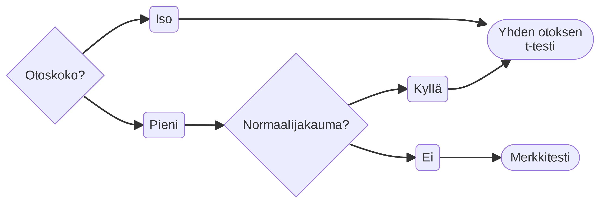
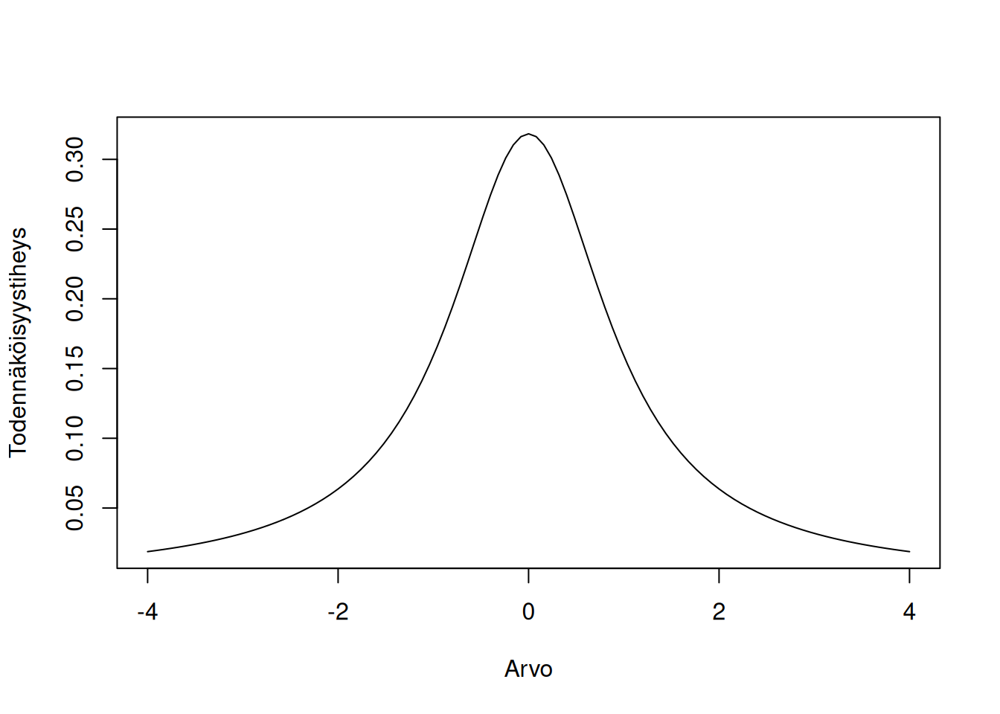
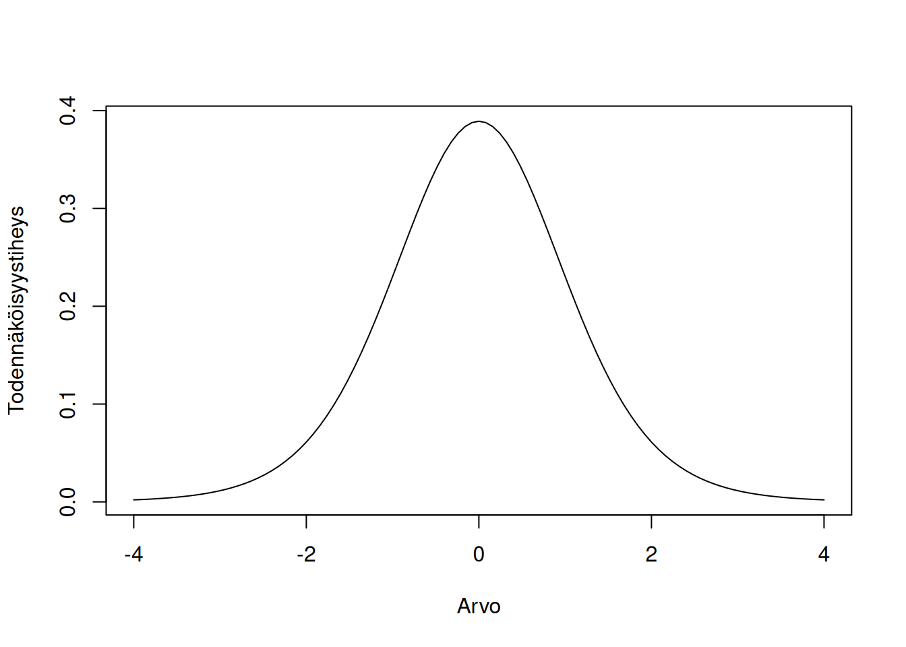
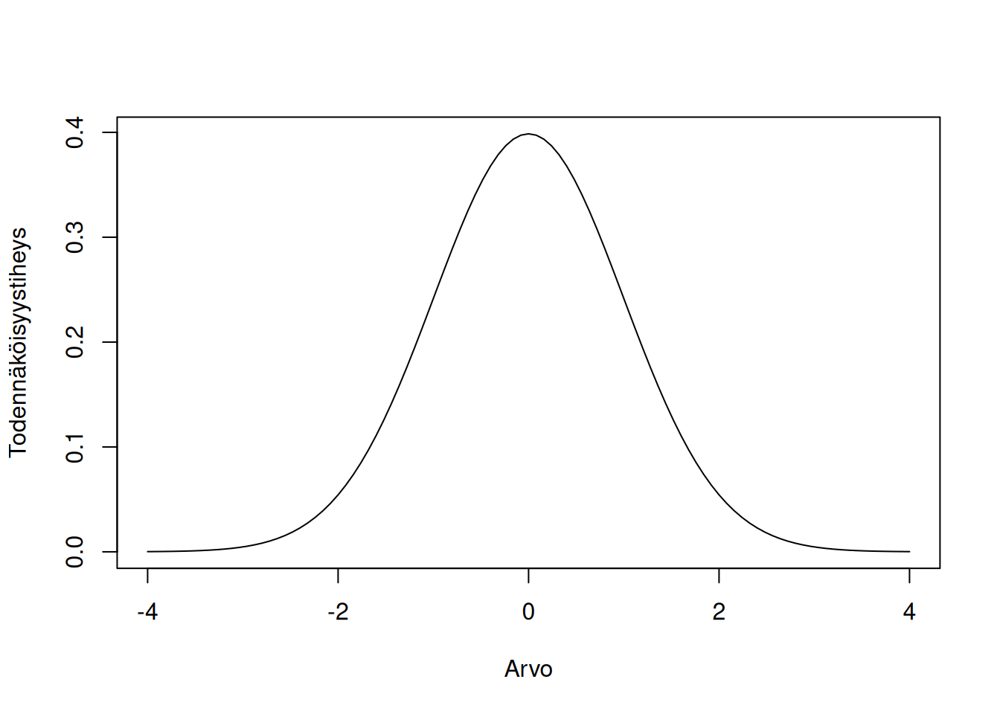
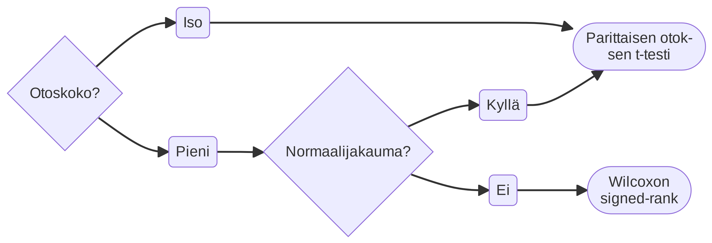
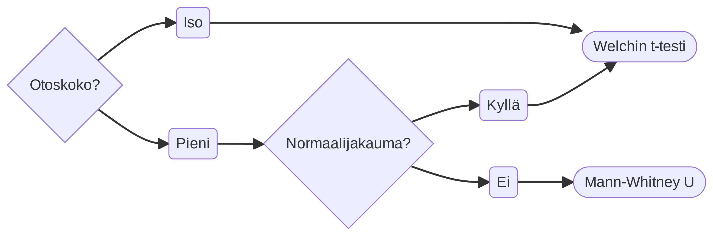

11 T-testi
T-testi on testiperhenimi testeille, joilla voidaan testata kvantitatiivisten muuttujien merkitsevyyttä. T-testiperheitä löytyy kaksi: yhden otoksen t-testi sekä Studentin t-testi.
Yhden otoksen t-testillä voidaan testata, eroaako jokin mitta (yleensä keskiarvo) merkitsevästi tietystä arvosta. Testin ei-parametrinen vastaavuus on merkkitesti (Alaluku 10.1).
Studentin t-testillä voidaan testata kahden keskiarvon eroa tilastollisesti. Testillä tarkistetaan, onko mitattu ero tarpeeksi suuri, että voisimme luotettavasti hylätä nollahypoteesin (ettei eroa ole, eli eron koko on nolla).
Molemmat testiperheet perustuvat t-jakaumaan, jonka määrittelyyn käytetään jakauman vapausasteita:



Mittausasteikko: Välimatka- ja suhdeasteikko.
Studentin T-testistä löytyy kaksi pääkategoriaa: parittaisen otoksen t-testi ja kahden otoksen t-testi. Näiden ero on sekä laskennallinen että teoreettinen, joten on tärkeää valita oikea testi!
Parittaisen otoksen t-testi testaa kahden arvon välistä eroa, kun arvot tulevat samasta yksiköstä (esim. vastaajasta). Tätä käytetään esimerkiksi kun samoille henkilöille tehdään mittaus ennen ja jälkeen jotain kokeellista interventiota, ja halutaan tarkastaa, oliko interventiolla vaikutusta. Testin ei-parametrinen vastaavuus on Wilcoxonin signed-rank -testi (Alaluku 10.2).
Kahden otoksen t-testi testaa kahden eri otoksen keskiarvojen eroa, eli arvot tulevat eri yksiköstä (esim. eri vastaajaryhmät). Tätä voi käyttää, kun haluaa tarkastaa miten esimerkiksi kaksi sosiaalista ryhmää eroavat jollain muuttujalla. Testin ei-parametrinen vastaavuus on Mann-Whitney’n U-testi (Alaluku 10.3).
Tässä kirjassa kahden otoksen t-testinä käytetään Welchin t-testiä. Testiversio toimii muuttujilla, joiden ryhmillä on eri varianssit (eli ovat heteroskedastisia). Studentin T-testistä löytyy myös homoskedastisen suhteen t-testi, mutta koska Welchin t-testi on robustimpi, emme käytä Studentin homoskedastista t-testiä. Welchin t-testin laskeminen käsin on hankalampaa, myönnetään, mutta se on vakiintuneessa käytössä tieteessä.
11.1 T-testin vapausasteet
Vapausasteet t-testille määritellään hieman eri tavalla riippuen testimuodosta. Taulukossa 11.1 näkyy vapausasteiden laskentatavat:
| Testityyppi | Vapausasteet |
|---|---|
| Yhden otoksen t-testi | \(\text{df} = n - 1\) |
| Parittaisen otoksen t-testi | \(\text{df} = n - 1\) |
| Kahden otoksen t-testi | \(\text{df} = \frac{1}{Z_1 + Z_2}\) \(Z_k = (\frac{SD_k/n_k}{SD_1/n_1 + SD_2/ n_2})^2/(n-1)\) |
Sekä yhden että parittaisen otoksen t-testin vapausasteet ovat yksinkertaisesti otoskoko miinus yksi. Kahden otoksen Welchin t-testin vapausasteet ovat hieman hankalammat. Molemmille ryhmille lasketaan \(Z\)-arvo: ryhmän keskihajonta jaattuna otoskoolla, ja tämä jaattuna molempien ryhmien keskihajonnan ja otoskoon jakolaskujen summalla, ja vielä tulos neliöön. Jaa sitten tulos otoskoolla miinus yksi.
11.2 T-testin mallioletukset
T-testillä on kolme pääsääntöistä mallioletusta: normaalijakautuminen, homoskedastisiteetti sekä muuttujien yksikkösuhteet.
11.2.1 Normaalijakautuminen
T-testi olettaa, että testattava arvo tulee normaalijakaumasta. Tämä on kuitenkin totta suurissa otoksissa yleisesti ottaen suurten numeroiden lain ansiosta, joten siitä ei tarvitse välittää.
Jos testaat Studentin t-testillä, normaalijakautunut arvo on testin alla oleva ero, ei arvot itsessään.
Jos kuitenkin testaat pienellä otoskoolla, voi tällä olla vaikutusta. Käytä mielummin ei-parametristä testiä.
11.2.2 Homoskedastisiteetti
T-testi olettaa, että kahden ryhmän väliset varianssit ovat riippumattomia ryhmään kuulumisesta - eli että ovat samankokoisia.
Voit testata oletusta useilla eri menetelmillä (ks. Luku 6).
Welchin t-testi on rakennettu toimimaan heteroskedastisella datajakaumalla, eli tämän rikkominen ei ole ongelma sen kannalta.
11.2.3 Joko täysin samat tai täysin eri yksiköt
T-testi vaatii, että mittausyksiköt ovat joko täysin samat (eli otoskoko verrattavien mittojen välillä tulisi olla sama), tai täysin eri (eli ryhmä 1 ja ryhmä 2 ovat täysin eri yksiköitä). T-testi ei toimi, jos sinulla on sekoitus samaa ryhmää ja eri ryhmiin kuuluvia yksiköitä.
Tarkista tämä oletus miettimällä: ovatko kaikki tutkimusyksiköt samasta vai eri yksiköstä?
Jos rikot olettamuksen, et voi käyttää t-testiä. Tilastollisia menetelmiä tällaisen mallintamiseen löytyy (engl. mixed models), mutta niiden käyttö on jo huomattavasti vaikeampaa eikä onnistu luontevasti Excelissä.
11.2.4 Yhteenveto vaatimuksista
Jos sinulla on isot otokset, ja tiedät, että molemmat muuttujat tulevat joko täysin samoista tai täysin eri yksiköistä, kaikki on hyvin ja voit jatkaa. Valitse kuitenkin oikea t-testi!
Jos sinulla on pieni otos, t-testi on herkempi normaalijakautumisen vaatimukselle. Parempi vaihtoehto voi olla ei-parametrinen testi. Vastaavat testit t-testille ovat Mann-Whitney’n U-testi (kahden otoksen testit) sekä Wilcoxonin signed-rank-testi (parittainen t-testi).
Jos et tiedä mitä yksikköjä on mitattu, sinun ei kannattaisi olla vielä testaamassa mitään. Tutustu dataasi enemmän ja selvitä mittaustavat!
11.3 T-testin valitseminen
Käytä näitä kulkukaavioita oikean testin valitsemiseksi. Valitse ensin oikea välilehti, ja aloita vasemmalta puolelta.


11.4 T-testin laskeminen
T-testin laskukaavat eroavat testiperheiden välillä. Varmista siis aina ensin, onko kyseessä yhden otoksen tesi, parittaisen otoksen testi vai kahden otoksen testi.
11.4.1 Yhden otoksen t-testi
Yhden otoksen t-testin kaava on:
\[ t = \frac{\bar{x} - \mu}{s/\sqrt{n}} \tag{11.1}\]
\(\bar{x}\) on keskiarvo, jota halutaan testata. \(\mu\) on koko, jota vastaan testataan. Jos testataan vain, eroaako keskiarvo nollasta, tämän voi jättää pois kokonaan.
\(s\) on jakauman keskihajonta, ja \(n\) on otoskoko.
11.4.2 Parittaisen otoksen t-testi
Parittaisen otoksen t-testin kaava on:
\[ t = \frac{1/n\sum{x-y}} {\sigma/\sqrt{n}} \tag{11.2}\]
\(1/n\sum{x-y}\) on erotuksen keskiarvo1, \(\sigma\) on erotuksen keskihajonta, ja \(\sqrt{n}\) on otoskoon neliöjuuri.
1 Jonkun asian jakaminen n:llä on sama kuin sen kertominen 1/n:llä. Tämä osuus on vain yleinen keskiarvolaskelma, vaikka kirjoitettuna hieman eri muotoon, eli \(\frac{\sum{x-y}}{n}\).
Laske ensin muuttujien väliset erotukset uudeksi muuttujaksi. Laske sitten tämän muuttujan keskiarvo ja keskihajonta. Syötä viimeiseksi nämä, sekä otoskoon neliöjuuri, kaavaan. Lopputulos on parittaisen t-testin testisuure.
11.4.3 Kahden otoksen (Welchin) t-testi
Kahden otoksen Welchin t-testin kaava on:
\[ t = \frac{\bar{x} - \bar{y}} {S'_D} \]
\(\bar{x} - \bar{y}\) on ryhmien keskiarvojen ero. \(S'_D\) on ryhmitetyn varianssin keskivirhe, joka itsessään koostuu monesta osasta:
\[ S'_D = S_p \sqrt{\frac{1}{n_1} + \frac{1}{n_2}} \]
Ryhmitetyn varianssin keskivirhe on itse ryhmitetty varianssi \(S_p\) kertaa otoskokojen inverssien summan neliöjuuri \(\sqrt{1/n_1 + 1/n_2}\).
Ryhmitetty varianssi (engl. pooled variance) ottaa huomioon molempien ryhmien eri keskihajonnat ja otoskoot:
\[ S_p = \sqrt{\frac{(n_1 - 1) s^2_1 + (n_2 - 1) s^2_2}{n_1 + n_2 - 2}} \]
Kaavan laskenta kannattaa aloittaa “alhaalta ylös”. Ensin lasketaan ryhmien keskihajonnat (muista keskihajontojen nostaminen neliöön!), sitten ryhmitetty varianssi. Sitten kerrotaan ryhmitetty varianssi otoskokojen inverssien summan neliöjuurella saadaksemme ryhmitetyn varianssin keskivirhe. Viimeiseksi lasketaan keskiarvojen erotus ja jaataan tulos ryhmitetyn varianssin keskivirheellä. Lopputulos on Welchin t-testin suure.
11.5 Mittakoon laskeminen
T-testille voidaan laskea mittakoko, joko Pearsonin \(r\) tai Cohenin \(\hat{d}\). Suosittavaa on kuitenkin, että raportoit ensisijaisesti itse testatut arvot ja/tai eron (esimerkiksi prosenttiero), mutta näiden mittakokojen avulla muut tutkijat voivat hyödyntää tuloksiasi helpommin meta-analyyseissa.
Voit laskea Pearsonin \(r\)-suureen kaavalla:
\[ r = \sqrt{\frac{t^2}{t^2+\text{df}}} \tag{11.3}\]
jossa \(t^2\) on t-testin tulos neliöön, ja \(df\) on testin vapausasteet.
Voit myös laskea Cohenin \(\hat{d}\)-suureen kaavalla:
\[ \hat{d} = \frac{\bar{x}-\bar{y}}{s_{\bar{y}}} \tag{11.4}\]
jossa \(\bar{x}\) ja \(\bar{y}\) ovat mitatut keskiarvot ja \(s_{\bar{y}}\) on toisen keskiarvon keskihajonta.
Parittaisen t-testin \(\hat{d}\)-suureelle löytyy myös korjattu versio, joka ottaa huomioon parittaisten mittausten yhteiskorrelaation:
\[ \hat{d}_D = \frac{\hat{d}}{\sqrt{1-r}} \tag{11.5}\]
jossa \(r\) on yllä oleva \(r\)-suure.
11.6 T-testin laskeminen Excelissä
Excelissä löytyy valmis kaava, jolla saat Studentin t-testin p-arvon:
T.TESTI(matriisi1; matriisi2; suunta; laji)Syötä kaavalle molemmat datamatriisit
Suunta-parametriin määrittelet, käytätkö yksisuuntaista1vai kaksisuuntaista2häntääLaji-parametrilla määrittelet, teetkö parittaisen1, kahden otoksen homoskedastisen2vai kahden otoksen heteroskedastisen3t-testin
Funktio: Alaluku 19.7.4.4
Yhden otoksen t-testin laskeminen:
- Hae testattava muuttuja uuteen sarakkeeseen, suodattaen tyhjät solut pois:
=SUODATA(testattava_muuttuja; testattava_muuttuja <> "")- Käytä tätä aluetta seuraavissa laskuissa parametreissä
muuttuja
- Käytä tätä aluetta seuraavissa laskuissa parametreissä
- Laske t-suure:
=(KESKIARVO(muuttuja) - testattava_arvo) / (KESKIHAJONTA.S(muuttuja) / NELIÖJUURI(LASKE(muuttuja)))- Jos testattava arvo on
0, voit jättää sen kokonaan pois kaavasta.
- Jos testattava arvo on
- Laske t-suureen vapausasteet:
= LASKE(muuttuja) - 1 - Hae t-suuren todennäköisyys:
- Yksisuuntainen:
- Vasenhäntäinen:
=T.JAKAUMA(ITSEISARVO(t-suure); vapausasteet; EPÄTOSI) - Oikeahäntäinen:
=T.JAKAUMA.OH(ITSEISARVO(t-suure); vapausasteet)
- Vasenhäntäinen:
- Kaksisuuntainen:
=T.JAKAUMA.2S(ITSEISARVO(t-suure); vapausasteet)
- Yksisuuntainen:
- Laske t-suureen luottamusväli:
- Suuri otos:
- Yläraja:
=KESKIARVO(muuttuja) + LUOTTAMUSVÄLI.NORM(alfa / 2; KESKIHAJONTA.S(muuttuja); LASKE(muuttuja)) - Alaraja:
=KESKIARVO(muuttuja) - LUOTTAMUSVÄLI.NORM(alfa / 2; KESKIHAJONTA.S(muuttuja); LASKE(muuttuja))
- Yläraja:
- Pieni otos:
- Yläraja:
=KESKIARVO(muuttuja) + LUOTTAMUSVÄLI.T(alfa / 2; KESKIHAJONTA.S(muuttuja); LASKE(muuttuja)) - Alaraja:
=KESKIARVO(muuttuja) - LUOTTAMUSVÄLI.T(alfa / 2; KESKIHAJONTA.S(muuttuja); LASKE(muuttuja))
- Yläraja:
- Parametri
alfaedustaa valitsemaasi alfatasoa, esim.0,05(95 % luottamusvälille).
- Suuri otos:
- Laske mittakoko:
- Pearsonin \(r\):
=NELIÖJUURI(t-suure ^ 2 / (t-suure ^ 2 + vapausasteet)) - Cohenin \(\hat{d}\):
=KESKIARVO(muuttuja) - testattava_arvo / VAR.S(muuttuja) - Cohenin korjattu \(d\):
=cohenin_d / NELIÖJUURI(1 - r)
- Pearsonin \(r\):
Parittaisen t-testin laskeminen:
- Hae testattavat muuttujat uusiin sarakkeisiin, suodattaen tyhjät arvot parillisesti pois:
- Muuttuja 1:
=SUODATA(muuttuja1_alkuperäinen; (muuttuja1_alkuperäinen <> "") * (muuttuja2_alkuperäinen <> "")) - Muuttuja 2:
=SUODATA(muuttuja2_alkuperäinen; (muuttuja1_alkuperäinen <> "") * (muuttuja2_alkuperäinen <> "")) - Käytä näitä alueita seuraavissa laskuissa parametreissä
muuttuja1jamuuttuja2
- Muuttuja 1:
- Laske muuttujien erotus uudeksi muuttujaksi:
=muuttuja1# - muuttuja2# - Laske erotuksen keskiarvo ja keskihajonta:
=KESKIARVO(erotus)ja=KESKIHAJONTA.S(erotus) - Laske parittainen t-suure:
=KESKIARVO(erotus) / (KESKIHAJONTA.S(erotus) / NELIÖJUURI(LASKE(erotus))) - Laske t-suureen vapausasteet:
=LASKE(erotus) - 1 - Hae t-suureen todennäköisyys:
- Yksisuuntainen:
- Vasenhäntäinen:
=T.JAKAUMA(ITSEISARVO(t-suure); vapausasteet; EPÄTOSI) - Oikeahäntäinen:
=T.JAKAUMA.OH(ITSEISARVO(t-suure); vapausasteet)
- Vasenhäntäinen:
- Kaksisuuntainen:
=T.JAKAUMA.2S(ITSEISARVO(t-suure); vapausasteet)
- Yksisuuntainen:
- Laske t-suureen luottamusväli:
- Suuri otos:
- Yläraja:
=KESKIARVO(erotus) + LUOTTAMUSVÄLI.NORM(alfa / 2; KESKIHAJONTA.S(erotus); LASKE(erotus)) - Alaraja:
=KESKIARVO(erotus) - LUOTTAMUSVÄLI.NORM(alfa / 2; KESKIHAJONTA.S(erotus); LASKE(erotus))
- Yläraja:
- Pieni otos:
- Yläraja:
=KESKIARVO(erotus) + LUOTTAMUSVÄLI.T(alfa / 2; KESKIHAJONTA.S(erotus); LASKE(erotus)) - Alaraja:
=KESKIARVO(erotus) - LUOTTAMUSVÄLI.T(alfa / 2; KESKIHAJONTA.S(erotus); LASKE(erotus))
- Yläraja:
- Parametri
alfaedustaa valitsemaasi alfatasoa, esim.0,05(95 % luottamusvälille).
- Suuri otos:
- Laske mittakoko:
- Pearsonin \(r\):
=``NELIÖJUURI(t-suure ^ 2 / (t-suure ^ 2 + vapausasteet)) - Cohenin \(\hat{d}\):
=erotus / NELIÖJUURI(VAR.S(erotus))
- Pearsonin \(r\):
Kahden otoksen t-testin laskeminen:
- Hae riippuvaisen muuttujan data uusiin sarakkeisiin ryhmityksen mukaan, suodattaen tyhjät pois:
- Ryhmä 1:
=SUODATA(riippuvainen_muuttuja; (ryhmämuuttuja = ryhmä1nro) * (riippuvainen_muuttuja <> "")) - Ryhmä 2:
=SUODATA(riippuvainen_muuttuja; (ryhmämuuttuja = ryhmä2nro) * (riippuvainen_muuttuja <> "")) - Käytä näitä alueita seuraavissa muuttujissa parametreissä
ryhmä1jaryhmä2
- Ryhmä 1:
- Laske ryhmien keskiarvot:
=KESKIARVO(ryhmä1)ja=KESKIARVO(ryhmä2) - Laske ryhmien keskihajonnat:
=KESKIHAJONTA.S(ryhmä1)ja=KESKIHAJONTA.S(ryhmä2) - Laske ryhmien varianssit:
=VAR.S(ryhmä1)ja=VAR.S(ryhmä2) - Laske ryhmäkoot:
=LASKE(ryhmä1)ja=LASKE(ryhmä2) - Laske ryhmille z-koot:
- Ryhmä 1:
=((varianssi1/koko1) / (varianssi1/koko1 + varianssi2/koko2))^2 / (koko1 - 1) - Ryhmä 2:
=((varianssi2/koko2) / (varianssi1/koko1 + varianssi2/koko2))^2 / (koko2 - 1)
- Ryhmä 1:
- Laske keskiarvojen erotus:
=keskiarvo1 - keskiarvo2 - Laske ryhmitetty varianssi:
=((koko1 - 1) * keskihajonta1 ^ 2 + (koko2 - 1) * keskihajonta2 ^ 2) / (koko1 + koko2 - 2) - Laske ryhmitetyn varianssin keskivirhe:
=NELIÖJUURI(ryhmitetty_varianssi) * NELIÖJUURI(1 / koko1 + 1 / koko2) - Laske t-suure:
=keskiarvojen_erotus / ryhmitetyn_varianssin_keskivirhe - Laske t-suureen vapausasteet:
=1 / (z_1 + z_2) - Hae t-suureen todennäköisyys:
- Yksisuuntainen:
- Vasenhäntäinen:
=T.JAKAUMA(ITSEISARVO(t-suure); vapausasteet; EPÄTOSI) - Oikeahäntäinen:
=T.JAKAUMA.OH(ITSEISARVO(t-suure); vapausasteet)
- Vasenhäntäinen:
- Kaksisuuntainen:
=T.JAKAUMA.2S(ITSEISARVO(t-suure); vapausasteet)
- Yksisuuntainen:
- Laske t-suureen luottamusväli:
- Suuri otos:
- Yläraja:
=keskiarvojen_erotus + LUOTTAMUSVÄLI.NORM(alfa / 2; 1; MAKS(koko1; koko2)) * ryhmitetty_varianssin_keskivirhe - Alaraja:
=keskiarvojen_erotus - LUOTTAMUSVÄLI.NORM(alfa / 2; 1; MAKS(koko1; koko2)) * ryhmitetty_varianssin_keskivirhe
- Yläraja:
- Pieni otos:
- Yläraja:
=keskiarvojen_erotus + LUOTTAMUSVÄLI.T(alfa / 2; 1; MAKS(koko1; koko2)) * ryhmitetty_varianssin_keskivirhe - Alaraja:
=keskiarvojen_erotus - LUOTTAMUSVÄLI.T(alfa / 2; 1; MAKS(koko1; koko2)) *ryhmitetty_varianssin_keskivirhe
- Yläraja:
- Parametri
alfaedustaa valitsemaasi alfatasoa, esim.0,05(95 % luottamusvälille).
- Suuri otos:
- Laske mittakoko:
- Pearsonin \(r\):
=NELIÖJUURI(t-suure ^ 2 / (t-suure ^ 2 + vapausasteet)) - Cohenin \(\hat{d}\):
=keskiarvojen_erotus / NELIÖJUURI(ryhmitetty_varianssi)
- Pearsonin \(r\):
11.7 T-testin raportointi
T-testille tulisi mieluisesti raportoida seuraavat tiedot:
Testin tyyppi (yhden, parittaisen vai kahden otoksen testi)
Verratut arvot \(\bar{x}\) ja \(\bar{y}\)
Testisuure \(t\)
Vapausasteet \(\text{df}\)
P-arvo \(p\) (ja/tai luottamusväli \(\text{CI}\))
Mittakoko (Pearsonin \(r\) tai Cohenin \(\hat{d}\))
Esimerkki t-testin raportoinnista
Naiset ja miehet eroavat riskikäsityksissään: naisten (\(n = 112\)) keskiarvo mittarilla on \(0.03\) ja miesten (\(n = 123\)) matalempi \(-0.03\). Eron koko on siis noin \(0,06\) yksikköä. Ero on tilastollisesti merkitsevä ja kooltaan pienestä keskikokoiseen (\(t = 2.40\), \(\hat{d} = 0.31\) \(df = 230.8\), \(p = 0.017\), \(95\% \text{ CI } [0.058, 0.076]\)). Testinä käytettiin kahden otoksen Welchin t-testiä.